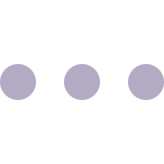
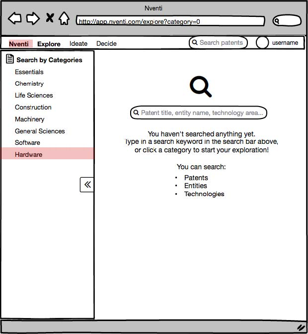
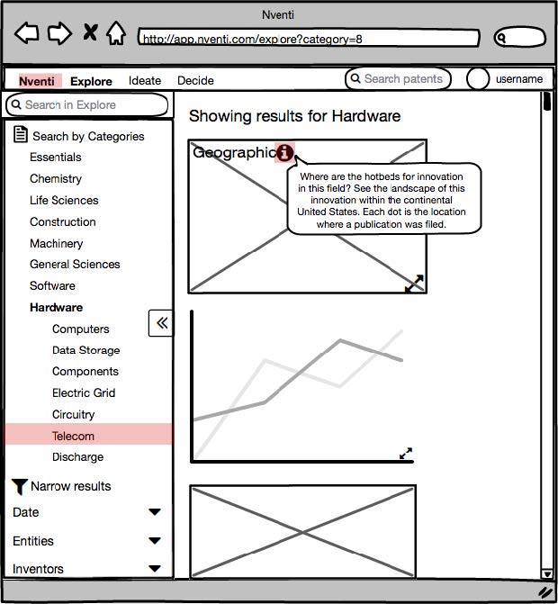
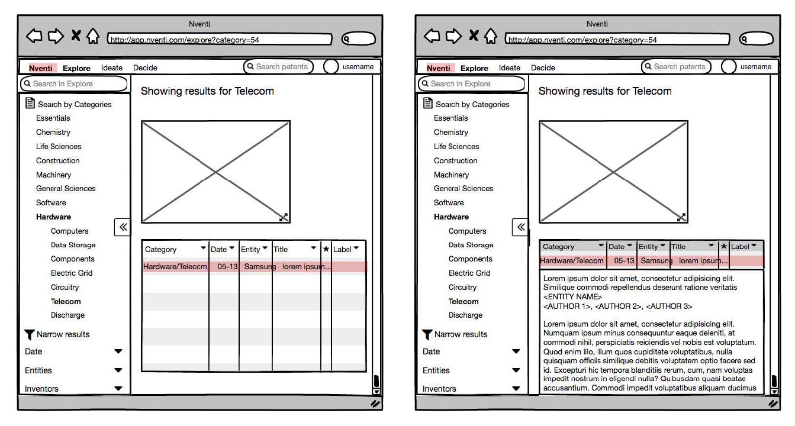

During my internship at Nventi, I took on a solo project where I designed parts of the SaaS application. Nventi serves to provide inventors and innovators with a search analytics tool for patents, and present data in an intuitive, meaningful way. Though incredibly important for inventors, patents oftentimes feel intimidating due to its unfriendly vocabulary and dense volume. As a UX/UI designer, my responsibility was to design the SaaS platform and make the experience of navigating through patents more delightful and comprehensible.
When I joined Nventi, we had just deployed a demo. The initial design included a homepage (that is now News), which displayed a national overview populated with curated news items based on a user’s interests, an activity feed and the patent filing trend. Then, there we had Explore as our second tab in which users could search patents or simply explore by typing in a keyword of interest. Explore was where we showed patents in a more meaningful way, by visualizing the data using only the important pieces of information.
But what were the important pieces of information? Our visualizations and table showed the technology category, entity, filing location, date, and title. Would our personas find these sufficient? Were we missing anything? Were these considered important all across the user personas? How could we assume the order of the visualizations? We had to explore these questions with care and conduct tangible user research, not just rely on feedback and comments from potential investors.
While we aimed to investigate how users deal with intellectual property, we also wanted to explore how users interact with our demo app. Exploring both aspects would allow us to plan future projects and tasks.
Our research objectives were:
Because we are based in SkyDeck, a startup incubator, we laid our focus on entrepreneurs and innovators.
My supervisor and I interviewed 4 people from different startups and recorded responses on Trello. Going over the results with the executive team, I took notes of the common pain points. It was surprising to see people get stuck with what we did not even think would be problematic or thought was intuitive. Some of the recurring problems were:
Based on these findings, I wireframed Explore page on Balsamiq.
Whether or not the user already has a search keyword in mind, Explore should allow him/her to literally explore, looking into the current statuses of the technologies of interest. Therefore, a strong CTA for search was necessary.
The old design had a search bar on the top nav, which would be a good CTA when a user is on the homepage but could feel out-of-place when s/he is on Explore. Generally, users didn't know what kind of results to expect from a search on the homepage and didn't think it would direct them to Explore.
In the new design, I added a search box on Explore page and a message that cues useful searches.
Once a user performs a search, s/he expects results immediately. However, the old design didn't show any of the visualizations, which are the key feature of Nventi app. Users did not notice the pills and went straight on to scroll through the table of numerous patents, which quickly bored them.
This called for a need to show something immediately after search. Search should be a simple process, not a multistep commitment. Because every user prioritizes different kinds of information differently, it’s hard to pick one visualization to display at default. I incorporated a card layout, which would allow users to see all visualizations at once, adjust the size of each visualization card and even move the cards around according to their preferences.
It was also challenging to improve the information architecture of the patent table. Patents are very dense in text, and their titles can be quite long. Importantly, users aren’t interested in seeing the full title and other supplemental information all the time. Hence, I also employed the progressive disclosure technique, which would allow the user to click for the full title, entity information, author(s)’s names, abstract and related figures. Following up on the interviewees later, I learned that this was a more elegant, effective solution to show the full title than letting overflow text scroll on hover.
After wireframing on Balsamiq, I created high-fidelity mockups using Sketch. I also revised the general color scheme of the platform. I dimmed the original bright sky blue to dark navy blue to convey professionalism and expertise. There still had to be a vibrant color that represents entrepreneurship and creativity, which is what Nventi strongly endorses. Saturated orange was selected to create such contrast.